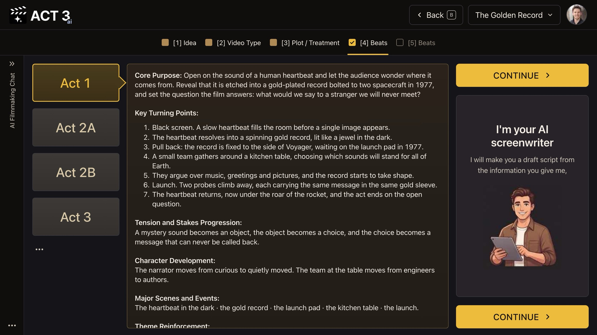

Step 5 of 8
Shape the acts
Acts are the big movements of your story: setup, confrontation, resolution. Click each act on the left and read its purpose and turning points. Edit what you want, then click CONTINUE ›.

Acts: one tab per act; its purpose and turning points beside it.
What an act is
An act is one large movement of the story that ends with a turn the characters cannot undo. ACT 3 AI uses four tabs: Act 1 (setup), Act 2A and Act 2B (the two halves of the long middle, split at the midpoint), and Act 3 (climax and resolution).
What each act shows
- Core Purpose: what this act must do for the story.
- Key Turning Points: the moments that move it forward, in order.
- Tension and Stakes Progression, Character Development, Major Scenes and Events and Theme Reinforcement below them.
Your decision: accept or reshape
If each act's turning points lead to the next act, press CONTINUE ›. If an act sags or a turn comes too late, edit it here. Fixing structure now is cheap; fixing it after the scenes are written means rewriting them.
Why you go next to the beats
Each act is now a list of turning points. The next page turns them into beats, the moments the scenes will be built from.